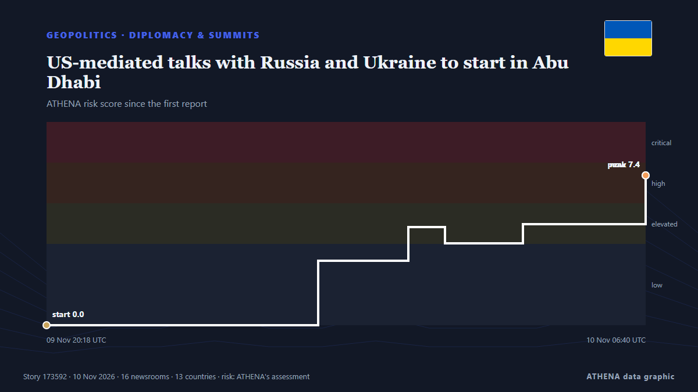

US-mediated talks with Russia and Ukraine to start in Abu Dhabi

ABU DHABI: Negotiators from Ukraine, Russia and the United States will hold talks in Abu Dhabi Tuesday on ending Europe’s worst conflict since World War II in the first such meeting in more than nine… from Arab News
Reported independently by 20 outlets in 14 countries since 9 Nov, first by Ukrainska Pravda (English); coverage is fading. ATHENA rates the risk high (6.8/10), driven mainly by the severity of the harm described and its geographic and sector reach — up from 0.0 in the last 24 hours. Confidence is 93% (high), with 20 independent outlets corroborating it and an average source reliability of 77%. Outlets by country: Ukraine (3), Russia (3), France (3). Coverage: 9 Nov to 10 Nov, 15 hours.
Why it matters: Russia's full-scale invasion of Ukraine began in February 2022. This tracker follows the fighting, strikes on infrastructure and the diplomacy around the war, as covered by outlets around the world.
What changed: 23 new reports from 19 outlets in the 24 hours to 10 Nov.
First reported as: Ukrainian representative says breakthrough unlikely in first round of trilateral talks, hopes pinned on second round
How to read this page
- What you are reading
- 20 outlets in 14 countries reported this event. The reports below are listed in the order they appeared; each headline opens the original article. ATHENA writes none of the reports.
- Our reading
- Under watch — The reports describe action, or a decision still to be taken, between states or armed groups. ATHENA follows what happens next. We look for four kinds of development: nothing further, an open action that someone claims, an action through others or without a claim, and an accident or misreading. We do not predict which will happen.
- How much evidence
- Fair Several independent outlets agree, but the picture could still change.
After repeats, off-topic items and stale reports are removed, 16 of the 23 listed reports are counted; 100% of the headlines match the event.
- What this does not mean
- ATHENA measures how an event is reported, not whether it is true. This is not a forecast, a judgement on who is right, or advice.
- What would change it
- Reports from other independent outlets showing a different development, or a firm confirmation or denial from an official source.
Reading R2 · refreshed with every update of this page. ATHENA has not yet published a track record for these readings; when it does, it will be linked here.
At a glance
Selected, scored and written by ATHENA's published methodology. No editor intervenes in individual events. How this is produced ›
| 09 Nov 16:58 UTC | 1 |
|---|---|
| 09 Nov 17:58 UTC | 0 |
| 09 Nov 18:58 UTC | 1 |
| 09 Nov 19:58 UTC | 1 |
| 09 Nov 20:58 UTC | 2 |
| 09 Nov 21:58 UTC | 1 |
| 09 Nov 22:58 UTC | 1 |
| 09 Nov 23:58 UTC | 2 |
| 10 Nov 00:58 UTC | 1 |
| 10 Nov 01:58 UTC | 1 |
| 10 Nov 02:58 UTC | 1 |
| 10 Nov 03:58 UTC | 2 |
| 10 Nov 04:58 UTC | 3 |
| 10 Nov 05:58 UTC | 4 |
| 10 Nov 06:58 UTC | 2 |
| 09 Nov 20:18 UTC | 0.0 |
|---|---|
| 10 Nov 01:00 UTC | 3.2 |
| 10 Nov 02:34 UTC | 4.8 |
| 10 Nov 03:12 UTC | 4.0 |
| 10 Nov 04:33 UTC | 5.0 |
| 10 Nov 06:40 UTC | 7.4 |
| 10 Nov 09:49 UTC | 6.5 |
| 10 Nov 09:49 UTC | 6.8 |
Why these numbers
Importance
Risk
Confidence
The reporting — who reported it, and when
headline as published · opens the original- Ukrainska Pravda (English) · UkraineUkrainian representative says breakthrough unlikely in first round of trilateral talks, hopes pinned on second round
- TASS (English) · RussiaWitkoff and Kushner may visit Russia after talks in Abu Dhabi — Reuters
- TASS (English) · RussiaUS proposes including Europe in consultations on Ukraine after Abu Dhabi talks — Reuters
- Meduza (English) · RussiaRussia, Ukraine, and the U.S. to hold peace talks in Abu Dhabi on November 10 — their first trilateral meeting since February, with security issues expected to top the agenda
- France 24 English · FranceWhat to expect as Russia, Ukraine and the US hold trilateral talks in Abu Dhabi
- APA (English) · AzerbaijanUS President believes progress on Ukraine possible at Abu Dhabi talks
- DW English · GermanyNew trilateral talks on Ukraine war in Abu Dhabi: What to expect?
- The Straits Times · SingaporeRussia, Ukraine to meet for US-backed talks after Trump says broad deal possible
- Al-Monitor · United StatesRussia, Ukraine to meet for US-backed talks after Trump says broad deal possible
- RTÉ News · IrelandUkraine delegation meets US envoys ahead of Russia talks
- Kyiv Post · UkraineTrump Hails Abu Dhabi Peace Talks, Brushes Off Question on Putin Ignoring Ceasefire Demands
- Arab News · Saudi ArabiaUS-mediated talks with Russia and Ukraine to start in Abu Dhabi
- People Daily · KenyaRussia, Ukraine and US set for talks as Zelenskyy claims battlefield gains
- CNA (Channel NewsAsia) · SingaporeUS-mediated talks with Russia and Ukraine to start in Abu Dhabi
- Vanguard · NigeriaUS-mediated talks with Russia and Ukraine to start in Abu Dhabi
- RFI English · FranceUkraine peace talks in Abu Dhabi to test Russia's willingness to negotiate
- The National · United Arab EmiratesAbu Dhabi hosts Russia-Ukraine talks, Trump says Iran war may end soon and deadly rain hits Gaza
- France 24 English · FranceLive: Ukraine, Russia and US to resume peace talks in Abu Dhabi
- ABC News (International) · United StatesPast talks involving Russia and Ukraine have yielded little progress toward peace
- News of Bahrain · BahrainAbu Dhabi Hosts New US-Russia-Ukraine Talks
- ABC News (International) · United StatesG7 attention turns to Ukraine while US-mediated talks get underway in Abu Dhabi
- DW English · GermanyUS, Russia and Ukraine to restart talks in Abu Dhabi
- Kyiv Independent · UkraineUkraine meets European, US officials in Abu Dhabi ahead of renewed peace talks with Russia